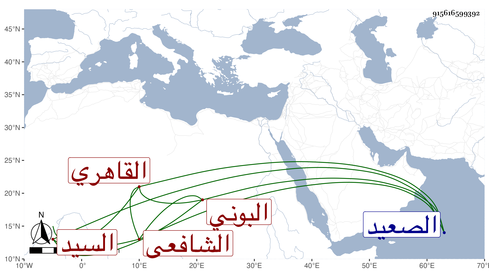

0902Sakhawi.DawLamic.ITO20230111-ara1.EIS1600.915616599392
Biography ID: 915616599392
53
عبد الله بن أبي بكر بن عبد الله بن محمد السيد جمال الدين البوني ثم الهوي الأصل القاهري الشافعي سبط ابن تقي القبابي . ولد تقريبا سنة ثلاثين وثمانمائة ونشأ يتيما فتكسب حريريا ثم أعرض عن ذلك واشتغل في الفقه والعربية وغيرهما وشارك بقوة ذكائه ، ولازمني في شرح الألفية وغيرها رواية ودراية وكذا أخذ عن أخي وجل تدبره به وتكسب بالشهادة وضاق عليه الحال فرجع إلى بلاده في الصعيد فأقام بها يسيرا ولم يحصل في الموضعين على طائل فعاد شاهدا وتزايد ضيقه .
